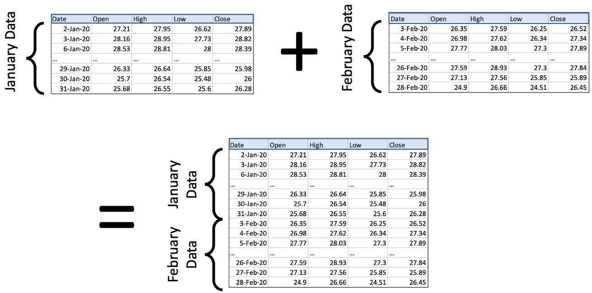
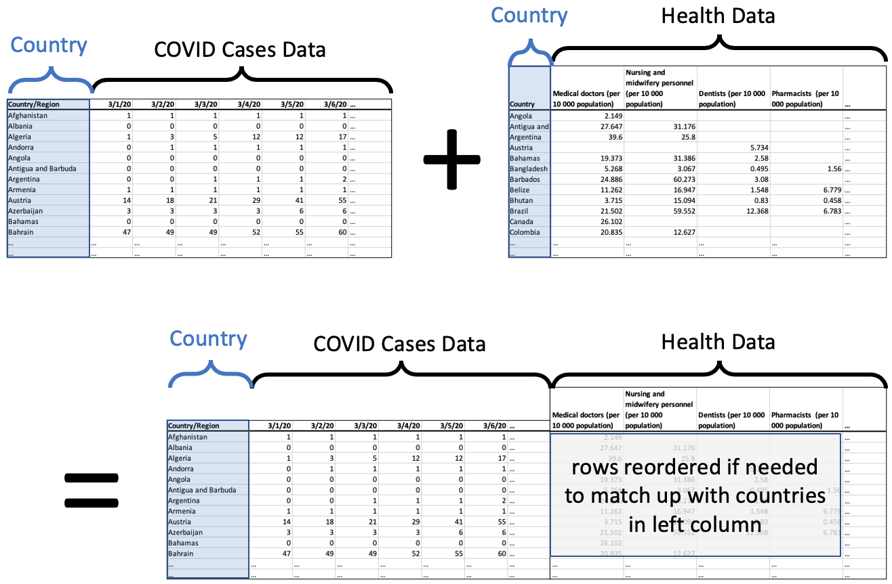
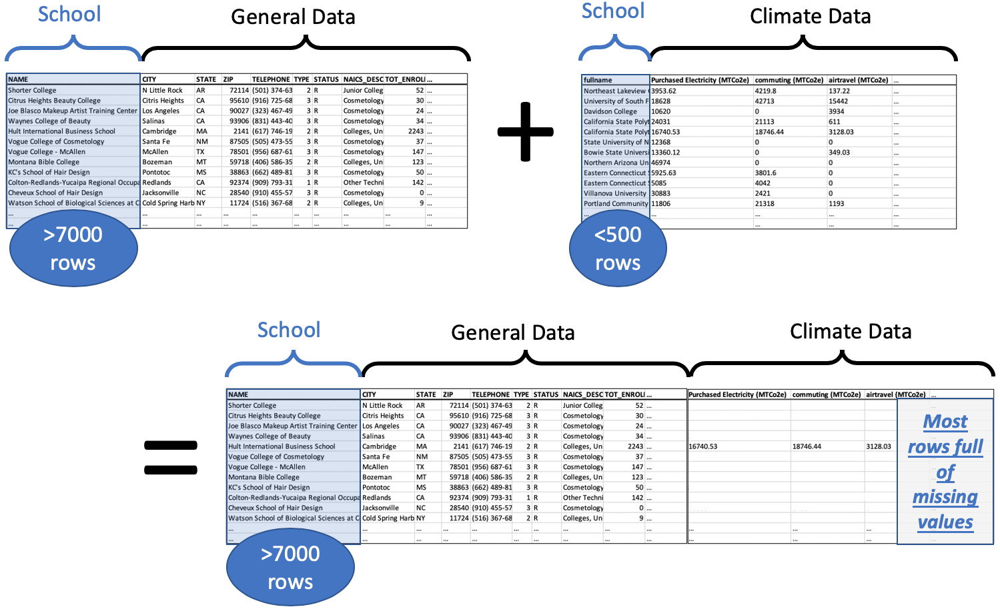
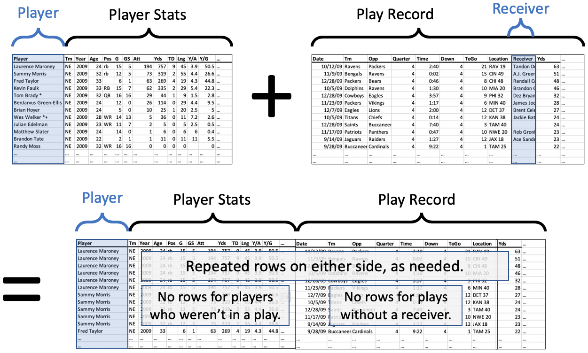
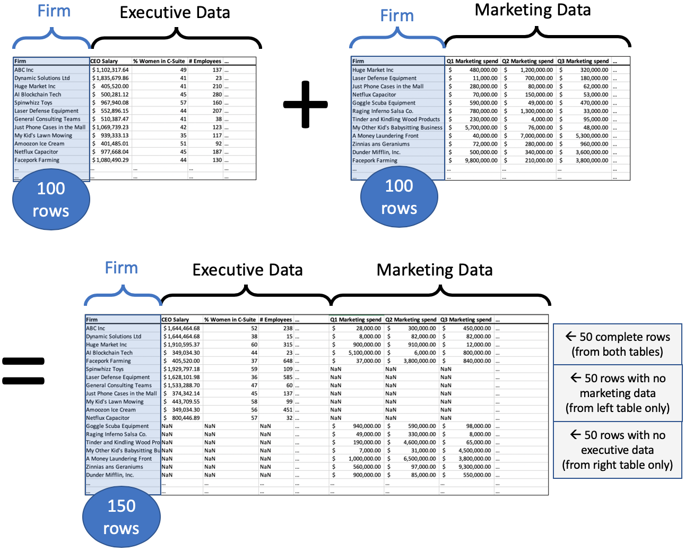

12. Concatenating and Merging DataFrames¶
See also the slides that summarize a portion of this content.
12.1. Why join two datasets?¶
This chapter is about two ways to combine DataFrames together. The concepts we’ll be discussing (concatenation and merging) are not unique to pandas DataFrames; they show up wherever tabular data is used, including in SQL.
Combining more than one dataset together is a crucial aspect of data work. Let’s see two examples.
Example 1. One of my friends runs a nonprofit organization that helps colleges and universities set climate action goals and track their progress toward keeping them. He asked my graduate data science course in Fall 2019 to look at their database and come up with any insights. Naturally, their database had records of all the climate goals and progress for schools they were working with, but it didn’t have much other information about those schools. What if we wanted to analyze a variable they weren’t tracking, like endowment? Or what if we wanted to look at schools that hadn’t get partnered with the nonprofit? That information would need to be brought in from another dataset. Until we do so, we can’t give interesting answers to the question the client posed.
Example 2. One of my colleagues in the math department told me about a clever strategy one investment group used to predict the earnings of companies they were considering investing in. They already had lots of data about each company, including the addresses of the company’s various offices and factories. They could also purchase access to a large database of satellite images. They used the addresses and some image-detection software to compute the number of cars in the parking lots of the company’s properties. This turned out to be a very useful predictor of growth that they could access before their competing investors had the information. It involved bringing together two datasets in a clever way.
In this chapter, we’ll discuss how to combine just two DataFrames, but the ideas apply if you have more than two. For instance, to concatenate five DataFrames df1 through df5, we can proceed in pairs, combining df1 and df2, then combining that result with df3, and so on until we have included df5.
Let’s start by dicsussing concatenation, which is definitely the easier of the two concepts, before we tackle merging. The English verb “concatenate” means to attach two things together, one after the end of the other.
12.2. Concatenation is vertical¶
DataFrames are tables of data, so when combining, we’ll either be stacking them vertically or horizontally. Concatenation is vertical stacking.
It is an extremely common operation. Very often what happens after you get some data is that (not surprisingly) you later get more of the same type of data.
For instance, if you’re taking scientific measurements in a lab, one week you get a set of measurements, and the next week you get more data in the same format.
Or if you’re following a stock or other financial instrument, its prices one week form a dataset, then the next week, you see more data with the same format.
Because the standard way to organize tabular data is to put observations in rows, then getting more observations means we just need to add more rows onto the bottom of our previous table of data. This is what concatenation is for. Here’s an illustration using the stock prices example, with data that comes from Renewable Energy Group, Inc., whose 2020 data we’ve seen before in this course.

There are two important things to notice in the picture.
All that’s happening is that we’re stacking data vertically. It’s very straightforward!
In order for us to stack two DataFrames, they must have the same columns. The column headers are highlighted in blue to emphasize that they’re the same in every table.
(There are ways to deal with the case where new data comes in with different column headers, we’re covering the most common case here.)
The code to do this is extremely easy; it is a single call to the pd.concat() function. You provide a Python list of all the DataFrames to concatenate; in this case, we have just two. We tell it to ignore the old indexes and create a new one, so that we don’t have duplicate index entries.
import pandas as pd
df_jan = pd.read_csv( '_static/regi-prices-jan-2020.csv' )
df_feb = pd.read_csv( '_static/regi-prices-feb-2020.csv' )
df_2mo = pd.concat( [ df_jan, df_feb ], ignore_index=True )
df_2mo.head()
| Date | Open | High | Low | Close | |
|---|---|---|---|---|---|
| 0 | 2-Jan-20 | 27.21 | 27.95 | 26.62 | 27.89 |
| 1 | 3-Jan-20 | 28.16 | 28.95 | 27.73 | 28.82 |
| 2 | 6-Jan-20 | 28.53 | 28.81 | 28.00 | 28.39 |
| 3 | 7-Jan-20 | 28.17 | 28.28 | 26.08 | 26.44 |
| 4 | 8-Jan-20 | 26.37 | 26.40 | 24.86 | 25.19 |
df_2mo.tail()
| Date | Open | High | Low | Close | |
|---|---|---|---|---|---|
| 35 | 24-Feb-20 | 29.16 | 29.47 | 28.08 | 29.07 |
| 36 | 25-Feb-20 | 29.40 | 29.40 | 26.83 | 27.60 |
| 37 | 26-Feb-20 | 27.59 | 28.93 | 27.30 | 27.84 |
| 38 | 27-Feb-20 | 27.13 | 27.56 | 25.85 | 25.89 |
| 39 | 28-Feb-20 | 24.90 | 26.66 | 24.51 | 26.45 |
The pd.concat() function is actually much more powerful than just this one little use to which we’ve put it here. But we will discuss that more after we’ve discussed the more complex of the operations in this chapter, merging.
12.3. Merging is horizontal¶
Concatenation was appropriate when we had new rows (that is, new observations) to add to our dataset. But what if we had new columns instead? Keep in mind that, under the standard way we organize tabular data, columns represent the variables in our dataset. So getting new columns means learning more information about the rows we already had.
We saw a simple example of this last week; it was simple enough that we didn’t need to learn the full power of merging to handle it. Recall that we had a dataset of home mortgage applications, and we wanted to add into it a variable that measured political affiliation of the state in which the mortgage took place. We thus got a table that provided a measure of political alignment for each state, and we used that to add a new column to our old home mortgage dataset. Each row in the mortgage dataset got a new variable measuring political alignment. The table grew horizontally with new information from another table.
In fact, when we have only one column to add, the technique from last week’s class is easier than the full complexity of merging. Recall how we did it:
# make a dictionary that maps state abbreviations to voting measurements
repub_votes_in_state = dict( zip( df_election['State'], df_election['Trump'] ) )
# apply that dictionary to our home mortgage data to make a new column
df_mortgages['Trump2016%'] = df_mortgages['State'].apply( repub_votes_in_state )
But what if the situation is more complicated? This can happen in several ways. In each way, pd.merge() is there to solve the problem. Let’s look at each way that tables might grow horizontally.
12.4. Adding many columns at once¶
The technique shown above, which we used last week in class, is easy if bringing in only one new column. If we wanted to bring in many new columns, we’d need to apply that technique repeatedly, in a loop over those columns. But pd.merge() can do it all in one function call, and for the reasons we learned last week, that will probably be faster than a Python loop.
Let’s consider a concrete example to understand the idea of importing several new columns at once. Consider a dataset we’ve seen before, tracking the number of confirmed COVID-19 cases over time in various countries. Let’s say we wanted to see if the growth patterns in such a dataset were in any way related to health care information about the country, such as how much they spend on health care, how many doctors per capita, and so on. We’ll need to bring in another dataset with all that information about each country, and import it in as new columns. See the illustration below.
(All tables illustrated from here on will have “…” in the final rows and columns, to indicate that the table is really much bigger, and we’re showing only a portion in the illustration.)

The resulting DataFrame, on the bottom of the illustrationo, has all the data we want about each country, the COVID case data followed by the health data.
If the rows were not in exactly the same order in each DataFrame, the ones on the right will be reordered so that they match correctly with the rows on the left. To do this, we need a unique ID for each row that is consistent across both datasets. In this case, we would use the country name.
We’re making two important assumptions here.
The list of countries is exactly the same in both datasets, so we don’t have any leftover rows in either one. This is rarely how actual data works; there’s usually some discrepancy, so we’ll discuss next how to handle that.
The country names are spelled and formatted exactly the same in both datasets. This is also not always true, so at the end of this chapter, we’ll talk about how to fix that problem if and when it arises in your own work.
This operation is called a merge in pandas or a join in SQL. We could do it with code like the following. We say we “merge on” the column we’re using as the unique ID. So the illustration above is a merge on country name (or a join on country name). In the left dataset, the column is called “Country/Region” and in the right dataset, it’s called “Country.” So the code for this merge looks like the following.
df_merged = pd.merge( df_cases, df_health,
left_on='Country/Region', right_on='Country' )
If the column name had been the same in both DataFrames, we could have done it more succinctly.
df_merged = pd.merge( df_cases, df_health, on='Country' )
12.5. When there is no match for some rows¶
The first assumption mentioned above was that each row in the COVID dataset matched up with exactly one row in the health dataset. The two datasets were the same size and had the same countries. But what if this had not been the case? Let’s consider two merging examples where the rows of the one dataset don’t match up perfectly with those of the other. First, what if some rows in one dataset don’t match up with any rows from the other dataset?
Recall the example from the start of this chapter about my friend’s nonprofit. I gave my students a comprehensive database from the U.S. government detailing lots of information about every institution of higher education in the U.S., over 7000 of them. We wanted to merge that with the list of schools who had partnered with the climate nonprofit, of which there were fewer than 500. Of course, the nonprofit hadn’t partnered with every school in the U.S.; that would be impressive! So clearly some of the rows in the big dataset were not going to match with any of the rows in the climate dataset. What do we do in that case?
Keeping in mind the goal of that project, we want to ensure that we keep in our dataset all the schools in the comprehensive dataset, because we will want to do analytics on those schools who haven’t signed up with the nonprofit. There may be interesting patterns that help us see which schools tend not to sign up. But the rows for those schools will not have any climate data to add, so there will be a lot of missing values in the merged dataset, as shown in the following illustration.

Because the comprehensive dataset has over 7000 rows and we add climate data for less than 500 schools, the vast majority of the rows (about 6500/7000, or 93%) of them have no climate data, only missing values. Those missing values are shown as blank cells in the illustration, but pandas would show them as NaNs.
But this is exactly how we wanted it, because then we can consider two subpopulations, the schools with climate data and the schools without. We could investigate differences in their attributes and perhaps verify some such differences with hypothesis tests or other tools.
Because we used the left DataFrame as the definitive one, which we did not want to alter, and we brought the right DataFrame into it, we call this a left join. The code for doing this operation is exactly like the previous pd.merge() example, with one exception: we tell it that the left DataFrame is the definitive one, using the how keyword.
df_merged = pd.merge( df_big, df_climate,
left_on='NAME', right_on='fullname', how='left' )
If we had chosen to do how='right' instead, the right DataFrame would be considered the definitive one. Any school from the left DataFrame that didn’t appear in the right DataFrame would be discarded, and we would end up with under 500 rows, precisely one row for each school in the climate nonprofit’s dataset.
Note that we’re still making the unrealistic assumption that the school names in the government dataset will match perfectly with those in the nonprofit’s dataset, and we’ll address that at the end of the chapter.
This example showed what it was like if some of the rows in the left dataset match up with zero rows in the right dataset. But what if they match up with many rows in the right dataset?
12.6. When there are many matches for some rows¶
Let’s consider another example, this one from sports. We’ll use NFL football, but if you’re not familiar with the sport, the example will still make sense. All you need to know is that each team has many players, and that each play is a small part of a football game that uses just some of the team’s players. Some plays have a receiver, which is the player who catches the ball thrown to him (if any–sometimes the play does not involve throwing the ball).
As always in this chapter, imagine two datasets. The first is the set of all NFL players in a certain year and their stats for that year. (You can get these datasets online for free; here I’ll use a small sample of the players from the 2009 season.) The second is the set of all plays that happened in that same season, in any game. (The NFL lets you fetch this data from their website for free; again, I’ll use a small sample of plays from the 2009 season.)
Perhaps we have a theory we want to test about a team’s receivers. We want to compare certain statistics about the receiver to how the receiver performs in certain plays. (The details are unimportant.) So we will need to combine the two datasets, one with player stats and one with the plays from the games. We will want to match them up so that a row in the merged dataset contains the stats for the player who caught the ball, that is, the receiver for that play.
Now let’s consider how we will handle the many possibilities for how rows might match across the datasets. First let’s consider rows that match many other rows; this might happen in two ways.
What if a player is the receiver in more than one play? (This happens all the time, of course. Once a player is hired by a team, they often play in lots of games, and are involved in many plays.) We will want the player’s stats to appear in every play for which the player was the receiver. Good news! This is how merges always work; if a row in one DataFrame matches many rows in the other, the row is always copied.
What if a play has more than one receiver? This actually cannot happen, according to the rules of the NFL. Once a player has caught the ball, they are not eligible to pass it to another player. (If you’re familiar with football, don’t start talking about laterals; that’s not a pass!) So we don’t have to consider this possibility.
So those two considerations don’t seems to change our merging code at all. It seems like a standard merge will do what we want.
But what about a row in one dataset matching zero rows in the other dataset? This, too, might happen in two ways.
What if a player is the receiver in no play? (This happens often also. A player may be hired by a team, but is not as good as other players on the team, and thus does not yet get to play in real games.) We will not want this player to appear at all in our merged dataset, because we care about receivers who showed up in actual plays.
What if a play has no receiver? (This happens often also. There are many types of plays and not all involve throwing.) We will not want this play to appear in our merged dataset, because the analysis we want to do is about plays that have a receiver.
Putting these two considerations together, it does not seem like we want either a left join or a right join. Recall that a left join keeps all the rows of the left table and a right join keeps all the rows of the right table. In this case, however, we want to keep only rows that appear in both tables. This is called an inner join, and you can see it working in the illustration below.

The code looks the same as before, but only the how parameter has changed, now using the value "inner" rather than "left" or "right". Actually, "inner" is the default value for pd.merge(), so you can omit it in this case, but I include it for emphasis.
df_merged = pd.merge( df_players, df_plays,
left_on='Player', right_on='Receiver', how='inner' )
Notice that we specifically say that we want the stats for the player who was the receiver in the play, by asking the merge to happen using the Player column from the left dataset and the Receiver column from the right dataset.
This kind of merge will not introduce any new missing values, because if a row didn’t exist in the left or right dataset, it was not included in the result. That’s the definition of an inner join, and that’s why we chose to use that method in this case.
12.7. When I want to keep all the rows¶
An inner join is not appropriate for all merging situations. Consider a different example.
Let’s imagine that two Bentley professors found out they had done research on some of the same firms, and wanted to share data. Let’s say Professor Adams had investigated the executives at a set of firms, and had information about those roles, while Professor Cordova had information about the marketing investments of a similar set of firms.
When putting their data together, they don’t yet know what questions they’re going to ask; they’ll probably start with some exploratory data analysis. So they don’t want to throw away any of their data yet.
If they used an inner join, then they’d keep only the firms that appear in both datasets; that’s not what they want. A left or right join would also discard some firms. But they want to keep them all. This is called an outer join, and it’s shown in the illustration below.

The “Firm” column in the merged dataset will contain each name only once, and the row will be of one of three types.
If it was in both datasets, then the row contains data in every column (as long as the original datasets did).
If it was in the left dataset, then the row contains data about executives, with missing values for marketing.
If it was in the right dataset, then the row contains data about marketing, with missing values for executives.
(Obviously, if the firm was in neither dataset, it doesn’t show up in the merge.)
The code is the same as all the code we’ve seen up to this point, but with how='outer'.
df_merged = pd.merge( df_execs, df_marketing, on='Firm', how='outer' )
12.8. Summary¶
Before we tackle the challenging question of what happens if there is no unique ID to use for merging, let’s review where we’ve been and add some key details.
Big Picture
As I’ve introduced it here, pd.concat() combines the rows of two DataFrames together and pd.merge() combines the columns. While pd.concat() always adds rows, pd.merge() may or may not, depending on whether you use left, right, inner, or outer joins.
Although pd.concat() and pd.merge() have tons of options that let you do merges and concatenations in the opposite direction from what I taught here (e.g., concat horizontally or merge vertically), this is almost never what is called for in a data project, due to the way we typically arrange tabular data.
The pd.concat() function is the easy one, and simply unites two datasets vertically. The pd.merge() function is the more complicated of the two. Let’s imagine that we’ve called pd.merge(A,B) for two DataFrames A and B.
With
how='inner', the default, it creates new rows for every pair of rows fromAandBthat match on the specified columns, and it discards everything else.With
how='left', it creates new rows for every pair of rows fromAandBthat match on the specified columns, plus it also keeps every row fromAthat didn’t match anything fromB, and fills in theirBcolumns with missing values. This seesAas the important dataset, into which we’re bringing some information fromBwhere possible.With
how='right', the reverse happens. But you don’t need this option if you prefer thinking of the left dataset as the important one, into which we’re bringing new columns on the right. Instead ofpd.merge(A,B,how='right'), you can always just usepd.merge(B,A,how='left')instead.With
how='outer', it creates new rows for every pair of rows fromAandBthat match on the specified columns, plus it alsokeeps every row from
Athat didn’t match anything fromB, and fills in theirBcolumns with missing values, andkeeps every row from
Bthat didn’t match anything fromA, and fills in theirAcolumns with missing values. This throws no data away.
And as a final reminder, we’re covering merging because it’s extremely common and useful to find that you have two related datasets or databases that you want to bring together, so that subsequent analyses can benefit from relating the data in the two sources.
And yet it’s not common for those two datasets to have been planned carefully enough in advance that they share a unique ID system for their rows. More than likely, the two datasets were created by different teams, organizations, or software systems, and have quite different contents and formats. So we come to the final section of this chapter, figuring out how to do a merge even when there isn’t an obvious unique ID column to use for merging.
12.9. Ensuring a unique ID appears in both datasets¶
Ensuring that the datasets you want to merge each have a column that will match perfectly with the other dataset is an essential step before merging. Sometimes that step is extremely easy and sometimes it is very challenging. In the examples above, we assumed that the datasets already had columns that would match up perfectly.
And that’s not always an unrealistic assumption. For instance, when we merged the NPR voting records from 2016 into the home mortgage dataset in class, we merged on the two-letter abbreviation for each state. This standard set of abbreviations was established many years ago and is used consistently everywhere U.S. states are mentioned, so it was reliable and required no work on our part.
But let’s consider some more complex cases, so you’re ready for them when you encounter them.
12.9.1. Merging on multiple columns¶
If you don’t have a single column that works as a unique ID, but you have a set of columns that togther form a unique ID in the same way in each dataset, pandas supports merging on multiple columns. For instance, if your datasets each have columns for first and last names of the people in an organization, and you’re confident that no names repeat (e.g., only one John Smith, only one Erin Jones, etc.), then you can tell pandas to use more than one column to identify rows when merging. Just supply the list of column names when merging.
df_merged = pd.merge( df_members, df_activities,
left_on=['First Name','Last Name'],
right_on=['Given name','Surname'] )
12.9.2. Changing the format of a column¶
When you plan to merge two datasets, but no column is appropriate for the match, sometimes a quick computation of a new column will do the trick.
Example: If you were merging a dataset of customers using their phone numbers, perhaps dataset A contains just the numeric values (e.g., 17818913171) and dataset B contains the phone numbers formatted for human readability (e.g., +1 (781) 891-3171). You can create a new column in dataset B that removes all the spaces, plusses, minuses, and parentheses from the phone numbers, so that they’re ready to match with dataset A.
12.9.3. Joining multiple columns into one¶
It may also be possible to compute an appropriate column for merging by combining more than one column together.
Example: Let’s say you were merging two datasets about albums released by recording artists. The artists have a unique ID in your datasets, but the albums don’t. If you know that no artist released more than one album in the same month, you could combine together the artist’s unique ID with the month and year of the album’s release to form a unique ID for the album. E.g., if The Beatles had ID 2789045 and you’re considering the Sgt. Pepper album (May 1967), then you would use the code 2789045-May-1967 for that album. You could compute such a code for each row in each DataFrame.
12.9.4. Sequences with different frequencies¶
Another common problem is merging two types of time-based data that were reported on different time scales. For instance, let’s say you are trying to study police activity and criminal activity in a city. You have crime data in the form of daily records and police reports in terms of officers’ hourly shifts. If you wanted to combine these two datasets based on time, the difference in reporting frequency means it’s not obvious how to do it.
So pandas provides two functions for helping with such situations. These notes do not cover them in detail, but suggest you check out the documentation for pd.merge_orered() and the documentation for pd.merge_asof() for more sophisticated handling of time-based merge data.
12.9.5. What about unstandardized text?¶
This is more or less the hardest scenario. For instance, in Fall 2019, when my students wanted to merge the government’s comprehensive database of universities with the climate commitments of the schools who were working with our nonprofit client, our best option was to merge on the institution’s name. This is problematic due to variations in naming and spelling. For instance, what if one dataset writes Bentley University and the other writes Bentley Univ.? Or what if one dataset writes University of North Carolina at Chapel Hill and the other writes UNC Chapel Hill? How is a computer to know how to match these up? (That project actually involved merging several datasets about universities, and this same problem arose more than once!)
The short answer is that the computer will not figure this out, because pd.merge() only matches on exact equality of IDs, and so you as the data scientist are in charge of somehow creating columns of unique IDs in both datasets that will match up perfectly. This may require learning something about that domain. In Fall 2019, my students and I spent time googling various schools whose names didn’t seem to appear in the government’s dataset to figure out why!
When you’re stuck trying to get two similar-but-not-the-same columns of text to try to match perfectly, I suggest the following method. Whether this method is quick and easy or long and difficult varies significantly from one problem to the next. But the outline is the same.
Figure out the column in each dataset that is closest to being useful as a unique ID. (In the university example, this was the university name in each dataset, which was written the same in both datasets for many schools, but definitely not all.)
Figure out which dataset is to be the definitive one; this is typically the larger dataset. (In the university example, this was the comprehensive government dataset.) We will use the merge column from this definitive dataset as the “official” ID for each row, and we must adjust the other dataset so that it uses these “official” IDs rather than its own versions/spellings.
Add a new column to the smaller dataset that contains the official unique ID from the other, larger dataset that it should match. (In the university example, this means labeling each row in the nonprofit’s dataset with that school’s name as it appears in the government’s dataset.) This is not always easy.
Run
pd.merge()and have it match the unique ID column in the larger dataset with this newly created column in the smaller dataset, which is now a perfect match.
Notice that steps 1, 2, and 4 are quick and easy, but step 3 is where problems may or may not arise. Depending on how well the chosen columns match in the two datasets, step 3 might take a short time or a long time.
12.9.6. Extended Example¶
Let’s actually try to merge two datasets of university data. I will load here the comprehensive university dataset I mentioned, originally downloaded from here, as well as a US News university rankings dataset, originally downloaded from here.
df_big = pd.read_csv( '_static/Colleges_and_Universities.csv' )
df_big.head()
| X | Y | FID | IPEDSID | NAME | ADDRESS | ADDRESS2 | CITY | STATE | ZIP | ... | ALIAS | SIZE_SET | INST_SIZE | PT_ENROLL | FT_ENROLL | TOT_ENROLL | HOUSING | DORM_CAP | TOT_EMPLOY | SHELTER_ID | |
|---|---|---|---|---|---|---|---|---|---|---|---|---|---|---|---|---|---|---|---|---|---|
| 0 | -92.260490 | 34.759308 | 7001 | 107840 | Shorter College | 604 Locust St | NOT AVAILABLE | N Little Rock | AR | 72114 | ... | NOT AVAILABLE | -3 | 1 | 24 | 28 | 52 | 2 | 0 | 18 | NOT AVAILABLE |
| 1 | -121.289431 | 38.713353 | 7002 | 112181 | Citrus Heights Beauty College | 7518 Baird Way | NOT AVAILABLE | Citris Heights | CA | 95610 | ... | NOT AVAILABLE | -3 | 1 | 6 | 24 | 30 | 2 | 0 | 9 | NOT AVAILABLE |
| 2 | -118.287070 | 34.101481 | 7003 | 116660 | Joe Blasco Makeup Artist Training Center | 1670 Hillhurst Avenue | NOT AVAILABLE | Los Angeles | CA | 90027 | ... | NOT AVAILABLE | -3 | 1 | 0 | 24 | 24 | 2 | 0 | 11 | NOT AVAILABLE |
| 3 | -121.652662 | 36.700631 | 7004 | 125310 | Waynes College of Beauty | 1271 North Main Street | NOT AVAILABLE | Salinas | CA | 93906 | ... | NOT AVAILABLE | -3 | 1 | 18 | 16 | 34 | 2 | 0 | 9 | NOT AVAILABLE |
| 4 | -71.070737 | 42.369930 | 7005 | 164368 | Hult International Business School | 1 Education Street | NOT AVAILABLE | Cambridge | MA | 02141 | ... | NOT AVAILABLE | -3 | 2 | 0 | 2243 | 2243 | 2 | 0 | 143 | NOT AVAILABLE |
5 rows × 46 columns
df_rank = pd.read_csv( '_static/National Universities Rankings.csv', encoding='latin' )
df_rank.head()
| Name | Location | Rank | Description | Tuition and fees | In-state | Undergrad Enrollment | |
|---|---|---|---|---|---|---|---|
| 0 | Princeton University | Princeton, NJ | 1 | Princeton, the fourth-oldest college in the Un... | $45,320 | NaN | 5,402 |
| 1 | Harvard University | Cambridge, MA | 2 | Harvard is located in Cambridge, Massachusetts... | $47,074 | NaN | 6,699 |
| 2 | University of Chicago | Chicago, IL | 3 | The University of Chicago, situated in Chicago... | $52,491 | NaN | 5,844 |
| 3 | Yale University | New Haven, CT | 3 | Yale University, located in New Haven, Connect... | $49,480 | NaN | 5,532 |
| 4 | Columbia University | New York, NY | 5 | Columbia University, located in Manhattan's Mo... | $55,056 | NaN | 6,102 |
len( df_big ), len( df_rank )
(7735, 231)
Step 1. Figure out the closest columns we have to making a match. The only columns we could have a hope of using to uniquely identify these schools are their names. No other column in the ranking dataset could possibly be a unique ID that would also be in the big dataset.
Step 2. Figure out which dataset is to be the definitive one. Clearly, the comprehensive dataset should be the definitive one, and the rankings merged into it. So the university names in the big dataset are what we’ll use as the schools’ official names.
Step 3. Add a new column to the ranking dataset and, in it, store the correct official school name for each row. (Remember that official names come from the big dataset.) This is the tricky part.
Let’s just get a sense of how many of the 231 rows in the ranking dataset have an exact match in the big dataset, and thus their official names are already in the ranking dataset.
official_names = list( df_big['NAME'] )
def has_exact_match ( name_from_rank_df ):
return name_from_rank_df in official_names
sum( df_rank['Name'].apply( has_exact_match ) )
141
Thus 90 schools do not have an exact match. Those are the 90 we need to solve. It would be tedious to match them up by hand, because there are 90. So we will use a built-in Python text module to try to do some approximate string matching for us. The Python module difflib has a function called get_close_matches() that will take a piece of text and a list of options, and give you the closest matches. Here’s an example.
from difflib import get_close_matches
get_close_matches( 'Python is cool',
[ 'this is not close', 'also not close',
'Python is cruel', 'Nathan is cool' ] )
['Python is cruel', 'Nathan is cool']
Note that it doesn’t always find a good guess, if there isn’t one.
get_close_matches( 'pork', [ 'salad', 'lollipops', 'soda' ] )
[]
Let’s use get_close_matches() to create a function that will match up university names across the two datasets if they’re just off by a small amount. This could automate some of the matching we’d otherwise have to do by hand for those 90 schools that didn’t match exactly.
def get_closest_official_name ( name_from_df_rank ):
# If there's an exact match, we're already done.
if has_exact_match( name_from_df_rank ):
return name_from_df_rank
# Get the closest matches, if any.
close_matches = get_close_matches( name_from_df_rank, official_names )
# If there weren't any, return None
if len( close_matches ) == 0:
return None
# Otherwise, return the first one
return close_matches[0]
# Test it
get_closest_official_name( 'Bentley Universal' )
'Bentley University'
Let’s apply that function to every row in the small dataset. Note that get_close_matches() can be a bit slow, so the following code actually takes about 15 seconds to complete executing. (It would be even slower if we didn’t have the first if statement in get_closest_official_name(), which skips get_close_matches() when it’s not needed.)
df_rank['Official Name'] = df_rank['Name'].apply( get_closest_official_name )
df_rank.head()
| Name | Location | Rank | Description | Tuition and fees | In-state | Undergrad Enrollment | Official Name | |
|---|---|---|---|---|---|---|---|---|
| 0 | Princeton University | Princeton, NJ | 1 | Princeton, the fourth-oldest college in the Un... | $45,320 | NaN | 5,402 | Princeton University |
| 1 | Harvard University | Cambridge, MA | 2 | Harvard is located in Cambridge, Massachusetts... | $47,074 | NaN | 6,699 | Harvard University |
| 2 | University of Chicago | Chicago, IL | 3 | The University of Chicago, situated in Chicago... | $52,491 | NaN | 5,844 | University of Chicago |
| 3 | Yale University | New Haven, CT | 3 | Yale University, located in New Haven, Connect... | $49,480 | NaN | 5,532 | Yale University |
| 4 | Columbia University | New York, NY | 5 | Columbia University, located in Manhattan's Mo... | $55,056 | NaN | 6,102 | Coleman University |
The results are correct for the first four schools, which were exact matches, but not so good for Columbia. The only way to check to see if this worked out well is to do a manual check, because only a human is going to be able to assess whether Columbia University and Coleman University are the same; Python did its best.
We can check by taking a glance over the following output, and noting which rows are wrong. I don’t include the full output here of all 90 discrepancies, just to save space, but you can use pd.set_option( 'display.max_rows', None ) to see them all.
rows_with_guesses = df_rank[ df_rank['Name'] != df_rank['Official Name'] ]
rows_with_guesses[['Name','Official Name']]
| Name | Official Name | |
|---|---|---|
| 4 | Columbia University | Coleman University |
| 18 | Washington University in St. Louis | Washington University in St Louis |
| 21 | University of California--Berkeley | University of California-Berkeley |
| 24 | University of California--Los Angeles | University of California-Los Angeles |
| 25 | University of Virginia | University of Georgia |
| ... | ... | ... |
| 222 | New Mexico State University | New Mexico State University-Grants |
| 225 | University of Massachusetts--Boston | University of Massachusetts-Boston |
| 226 | University of Massachusetts--Dartmouth | University of Massachusetts-Dartmouth |
| 227 | University of Missouri--St. Louis | University of Missouri-St Louis |
| 228 | University of North Carolina--Greensboro | University of North Carolina at Greensboro |
90 rows × 2 columns
We see that in many cases, it did a good job, such as in rows 18, 21, 24, and 225 through 228. We know that rows 4 and 25 are wrong, but is row 222 wrong? That all depends on whether Grants is the location of the main campus for New Mexico State University. Now you see why my students and I ended up on Google!
After inspecting the full list of 90 discrepancies, I found 30 that I still needed to fix by hand. So the computer had done two-thirds of its guessing job right, saving me some time. But how do I manually correct the 30 mistakes I found? For instance, how do I correct row 4, which clearly isn’t right? I need to know the exact name of Columbia University in df_big.
Let’s do a search.
# Show me all names containing Columbia...
df_big[df_big['NAME'].str.contains( 'Columbia' )]['NAME']
60 Paul Mitchell The School-Columbia
439 American Career Institute√Columbia
619 Columbia College
668 Virginia College-Columbia
750 Columbia Southern University
872 Centura College-Columbia
1366 University of Phoenix-Columbia Campus
1438 ITT Technical Institute-Columbia
1610 Southeastern Institute-Columbia
1907 Kenneth Shuler School of Cosmetology-Columbia
1975 Columbia Theological Seminary
2059 Regency Beauty Institute-Columbia
2099 Remington College-Columbia Campus
2295 Columbia College
2583 Columbia College
2704 Columbia College of Nursing
2958 Columbia-Greene Community College
3346 Lower Columbia College
3348 Columbia Basin College
3404 Columbia College
3622 Columbia Gorge Community College
3936 Columbia State Community College
4042 Teachers College at Columbia University
4356 Columbiana County Career and Technical Center
4385 Columbia Centro Universitario-Caguas
4509 South University-Columbia
4666 University of the District of Columbia David A...
4719 Columbia International University
4723 Kenneth Shuler School of Cosmetology and Nails...
4728 University of South Carolina-Columbia
4974 Lincoln College of Technology-Columbia
5027 Columbia College
5099 Columbia Area Career Center
5371 Columbia College-Chicago
5581 University of the District of Columbia
5664 Columbia College Hollywood
5775 Strayer University-District of Columbia
6369 University of Missouri-Columbia
6661 Columbia University in the City of New York
7589 Columbia Centro Universitario-Yauco
Name: NAME, dtype: object
Holy cow! Let’s try to narrow our search a bit…
# Just the rows with Columbia and University...
df_big[df_big['NAME'].str.contains( 'Columbia' )
& df_big['NAME'].str.contains( 'University' )]['NAME']
750 Columbia Southern University
1366 University of Phoenix-Columbia Campus
4042 Teachers College at Columbia University
4509 South University-Columbia
4666 University of the District of Columbia David A...
4719 Columbia International University
4728 University of South Carolina-Columbia
5581 University of the District of Columbia
5775 Strayer University-District of Columbia
6369 University of Missouri-Columbia
6661 Columbia University in the City of New York
Name: NAME, dtype: object
Aha, Columbia University in the City of New York was so long of a phrase that get_close_matches() did not think it was “close” to Columbia University. So now I’ve found that the entry for row 4 in df_rank['Official Name'] should be Columbia University in the City of New York. I can simply tell Python to change it.
df_rank.loc[4,'Official Name'] = 'Columbia University in the City of New York'
When I’m done manually investigating the 30 schools that had to be fixed by hand, I will have 30 lines of code that look just like the one above, but for different schools. Here’s a sample.
df_rank.loc[4,'Official Name'] = 'Columbia University in the City of New York'
df_rank.loc[34,'Official Name'] = 'Georgia Institute of Technology-Main Campus'
df_rank.loc[41,'Official Name'] = 'Tulane University of Louisiana'
df_rank.loc[52,'Official Name'] = 'Pennsylvania State University-Main Campus'
# and so on, for a total of 30 changes
But if we’re trying to follow DRY principles, we notice that there’s definitely a lot of repeated code here. We’re copying and pasting the df_rank.loc[...,'Official Name'] = '...' part each time. We could simplify this by creating a Python dictionary with just our corrections. Here I include all 30 corrections as they would be if we had carefully investigated each.
# Store corrections in a dictionary:
corrections = {
4 : 'Columbia University in the City of New York',
34 : 'Georgia Institute of Technology-Main Campus',
41 : 'Tulane University of Louisiana',
52 : 'Pennsylvania State University-Main Campus',
54 : 'University of Washington-Seattle Campus',
60 : 'Purdue University-Main Campus',
68 : 'University of Pittsburgh-Pittsburgh Campus',
77 : 'Virginia Polytechnic Institute and State University',
85 : 'SUNY at Binghamton',
109 : 'University of South Carolina-Columbia',
112 : 'University of Missouri-System Office',
114 : 'University of Oklahoma Norman Campus',
130 : 'Colorado State University-Fort Collins',
135 : 'Louisiana State University-System Office',
146 : 'Ohio University-Main Campus',
149 : 'SUNY at Albany',
153 : 'Oklahoma State University-Oklahoma City',
162 : 'University of South Florida-Main Campus',
181 : 'University of New Mexico-Main Campus',
186 : 'Widener University-Main Campus',
187 : 'Kent State University at Kent',
189 : 'Pace University-New York',
193 : 'Bowling Green State University-Main Campus',
222 : 'New Mexico State University-Main Campus'
}
# Apply all the corrections at once:
for row_index, fixed_name in corrections.items():
df_rank.loc[row_index,'Official Name'] = fixed_name
# See if at least the top 5 look right:
df_rank.head()
| Name | Location | Rank | Description | Tuition and fees | In-state | Undergrad Enrollment | Official Name | |
|---|---|---|---|---|---|---|---|---|
| 0 | Princeton University | Princeton, NJ | 1 | Princeton, the fourth-oldest college in the Un... | $45,320 | NaN | 5,402 | Princeton University |
| 1 | Harvard University | Cambridge, MA | 2 | Harvard is located in Cambridge, Massachusetts... | $47,074 | NaN | 6,699 | Harvard University |
| 2 | University of Chicago | Chicago, IL | 3 | The University of Chicago, situated in Chicago... | $52,491 | NaN | 5,844 | University of Chicago |
| 3 | Yale University | New Haven, CT | 3 | Yale University, located in New Haven, Connect... | $49,480 | NaN | 5,532 | Yale University |
| 4 | Columbia University | New York, NY | 5 | Columbia University, located in Manhattan's Mo... | $55,056 | NaN | 6,102 | Columbia University in the City of New York |
Step 4. And now that all corrections have been made, we can do the merge with confidence. We take care to merge the main dataset’s "NAME" column with the smaller dataset’s "Official Name" column. This merge will be a left join, because we do not want to discard a school just because it wasn’t in US News’s rankings.
df_merged = pd.merge( df_big, df_rank, left_on='NAME', right_on='Official Name', how='left' )
df_merged.head()
| X | Y | FID | IPEDSID | NAME | ADDRESS | ADDRESS2 | CITY | STATE | ZIP | ... | TOT_EMPLOY | SHELTER_ID | Name | Location | Rank | Description | Tuition and fees | In-state | Undergrad Enrollment | Official Name | |
|---|---|---|---|---|---|---|---|---|---|---|---|---|---|---|---|---|---|---|---|---|---|
| 0 | -92.260490 | 34.759308 | 7001 | 107840 | Shorter College | 604 Locust St | NOT AVAILABLE | N Little Rock | AR | 72114 | ... | 18 | NOT AVAILABLE | NaN | NaN | NaN | NaN | NaN | NaN | NaN | NaN |
| 1 | -121.289431 | 38.713353 | 7002 | 112181 | Citrus Heights Beauty College | 7518 Baird Way | NOT AVAILABLE | Citris Heights | CA | 95610 | ... | 9 | NOT AVAILABLE | NaN | NaN | NaN | NaN | NaN | NaN | NaN | NaN |
| 2 | -118.287070 | 34.101481 | 7003 | 116660 | Joe Blasco Makeup Artist Training Center | 1670 Hillhurst Avenue | NOT AVAILABLE | Los Angeles | CA | 90027 | ... | 11 | NOT AVAILABLE | NaN | NaN | NaN | NaN | NaN | NaN | NaN | NaN |
| 3 | -121.652662 | 36.700631 | 7004 | 125310 | Waynes College of Beauty | 1271 North Main Street | NOT AVAILABLE | Salinas | CA | 93906 | ... | 9 | NOT AVAILABLE | NaN | NaN | NaN | NaN | NaN | NaN | NaN | NaN |
| 4 | -71.070737 | 42.369930 | 7005 | 164368 | Hult International Business School | 1 Education Street | NOT AVAILABLE | Cambridge | MA | 02141 | ... | 143 | NOT AVAILABLE | NaN | NaN | NaN | NaN | NaN | NaN | NaN | NaN |
5 rows × 54 columns
Now we have one large dataset containing both the generic data and the ranking data. Although we see all missing values for ranking columns above, this is just because the first five schools in the dataset didn’t happen to be ranked by US News. This is not surprising; there were over 7700 schools in the dataset and only 231 were ranked by US News. But we can see that the merge did go correctly if we inspect a row that had ranking data.
df_merged[df_merged['NAME'] == 'Harvard University']
| X | Y | FID | IPEDSID | NAME | ADDRESS | ADDRESS2 | CITY | STATE | ZIP | ... | TOT_EMPLOY | SHELTER_ID | Name | Location | Rank | Description | Tuition and fees | In-state | Undergrad Enrollment | Official Name | |
|---|---|---|---|---|---|---|---|---|---|---|---|---|---|---|---|---|---|---|---|---|---|
| 5822 | -71.118234 | 42.374172 | 87 | 166027 | Harvard University | Massachusetts Hall | NOT AVAILABLE | Cambridge | MA | 02138 | ... | 17141 | NOT AVAILABLE | Harvard University | Cambridge, MA | 2.0 | Harvard is located in Cambridge, Massachusetts... | $47,074 | NaN | 6,699 | Harvard University |
1 rows × 54 columns
This is one of the most challenging merges you might have to do, but it’s good to be prepared for the worst case scenario!